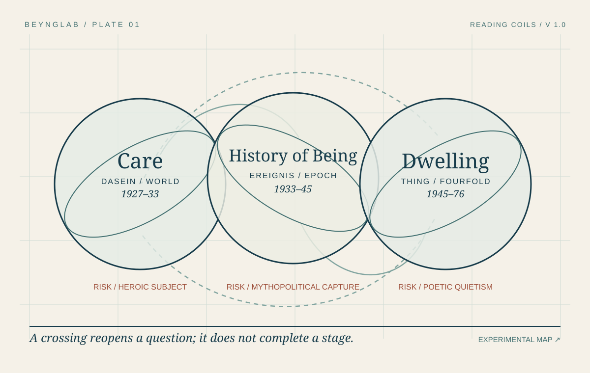

01 / PLATE
Visual argument / version 1.0
Three Heideggers Helyx.
Care, the history of Being, and dwelling recur as interwoven questions. The plate proposes crossings among them rather than a line of intellectual progress.

Read the plate
The argument in words.
- Care / 1927–33. Begin with Dasein already involved in a world. The question is not the isolated subject’s control but its situated concern. The danger is heroic authenticity.
- History of Being / 1933–45. Ask how a historical clearing orders what can appear. The danger is mythopolitical capture; Heidegger’s political entanglement belongs to the reading.
- Thing and dwelling / 1945–76. Attend to gathering and place. The danger is poetic quietism that omits labor and conflict.
- Crossings. Read “world” through all three. A later coil reopens rather than resolves the earlier question. Use the Turns and Topoi to follow a crossing.
Large circles = recurrent reading orientations. Curved paths = conceptual crossings. Rust labels = capture risks, carried into any application.
Sources & status
Primary Being and Time (GA 2) · Contributions to Philosophy · Building Dwelling Thinking. Experimental Periodization, loop geometry, and dangers are BeyngLab editorial synthesis of the AIR V report. Revised 28 September 2026.